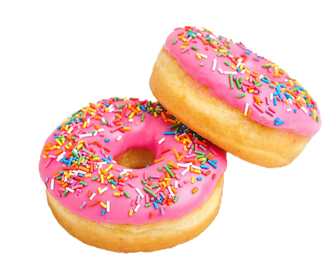

¿COMO PREPARAR DONUTS CASEROS?

“Nadie puede ser sensato con el estómago vacío”
INGREDIENTES
- Harina de fuerza (200gr)
- Harina (300gr)
- Levadura fresca (25gr)
- Mantequilla (60gr)
- Huevo (2uds)
- Leche (250ml)
- Sal (10gr)
- Aceite de girasol
- Aníses de decoración
- Chocolate rosa (150gr)
- Agua (75ml)
- Azúcar glas (100gr)
PREPARACIÓN
- En un bol mezclamos la levadura con la harina, deshaciéndola en migas
- Echamos la mantequilla, el azúcar, la sal, y por último, el huevo y la leche
- Queda una masa blanda y pegajosa
- Amasamos y formamos una bola, la metemos en el bol, tapamos con un paño y dejamos reposar durante 2 horas
- Cogemos porciones de la masa, hacemos bolitas y un agujero en el centro
- Vamos friendo los dónuts en una sartén con aceite caliente. Los sacamos sobre papel de cocina
- Mezclamos el agua con el azúcar glas, fundimos con cuidado el chocolate rosa y juntamos ambos
- Extendemos un poco del glaseado rosa por encima de los dónuts
- Decoramos con unas bolitas de anís de colores
INFORMACIÓN NUTRICIONAL
- Calorías:
- 470kcal
- Carbohidratos:
- 42gr
- Proteínas:
- 7gr
- Grasas:
- 30gr